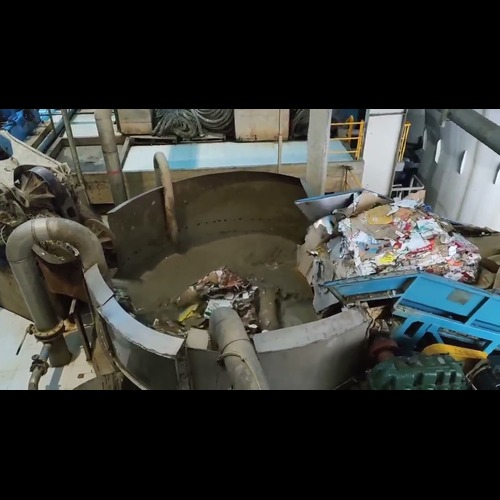

Step 1
Collect paper waste
Collect paper waste

Step 2
Preparation of paper stock
Preparation of paper stock
1. Pulper to turn waste paper into pulp (paper stock).
2. High-density cleaner to remove metal contaminants.
3. Screening (coarse screen and fine screen) to remove non-cellulosic impurities from the pulp.
4. Low-density cleaner to remove sand from the pulp.
5. Refining for fiber processing.
6. Thickener to increase the pulp's consistency.
Step 3
Wire
Wire

Step 4
Drying
Drying

Step 5
Resize and finishing
Resize and finishing